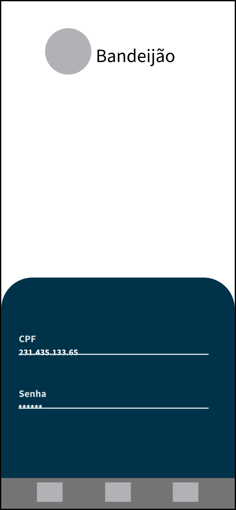
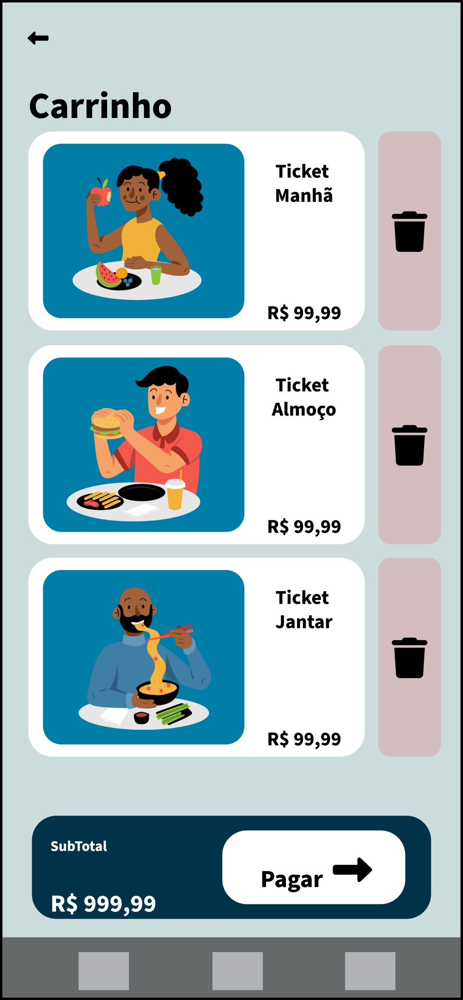

Bandejão RU
Sistema que permite o usuário consultar saldo, cardápio e realizar recarga no sistema do Restaurante
Universitário.
O aplicativo "Bandejão" foi desenvolvido com o propósito de solucionar problemas enfrentados pelos usuários do restaurante universitário. Atualmente, o sistema do restaurante universitário não oferece a opção de compras online, limitando as transações apenas a modalidades presenciais. Além disso, não há disponibilidade online do cardápio semanal, nem informações detalhadas sobre os valores nutricionais e possíveis alergênicos presentes nas refeições. Diante dessa situação, a equipe responsável por desenvolver o aplicativo "Bandejão" tem como objetivo remodelar as interfaces e algumas regras de negócio, proporcionando uma experiência mais fluida, interativa e acessível aos usuários.
Com base no modelo de Experiência do Usuário / Interface do Usuário (UX/UI), que preza pela forma como as pessoas se sentem ao utilizar um produto ou serviço, a equipe de desenvolvimento do "Bandejão" conduziu uma análise técnica detalhada. Foram avaliadas as ???. A partir dessa análise, foi elaborada uma nova proposta de interface, considerando não apenas aspectos visuais, mas também a facilidade de uso, interatividade e acessibilidade durante todo o processo de utilização.
A nova proposta de interface busca atender às seguintes necessidades: O sistema remodelado permitirá que os usuários efetuem compras online de créditos para o restaurante universitário. Isso proporcionará maior comodidade e evitará a necessidade de enfrentar filas para recarregar o saldo presencialmente.
Cardápio Semanal Online: O aplicativo "Bandejão" exibirá o cardápio semanal do restaurante universitário, permitindo que os usuários visualizem antecipadamente as opções disponíveis em cada refeição. Isso possibilitará um planejamento mais eficiente e informado das refeições.
Seguindo os moldes do sistema inspirador, remodelamos a tela inicial em cards
Tela Inicial da Ferramenta.
Para manter a familiaridade com o sistema utilizado nos totens do RU, o aplicativo usará o login do mesmo, sendo necessário seu cpf e senha.

Página de Login
Após selecionar a quantidade e os tickets desejados para compra, o usuário será levado para o carrinho, confirmando sua compra final

Tela do carrinho de compras
Para consultas de dados e a quantidade de tickets/créditos disponíveis, o usuário pode clicar no seu perfil e verificar na tela de usuário. Informações como tickets disponíveis, dados do SIGAA e o cartão usado para as compras estarão sendo mostradas nessa tela
Tela Inicial do usuário
Para cadastro da forma de pagamento online ou para alterar o cartão a ser usado, o usuário deve ir até esta tela.
Tela da forma de pagamento atual.